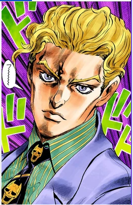

But I assure you, anyone can get into this anime. there's things here for everyone! Love, action, comedy, history, and super powers!
not only is the story fantastic but the art is extortionary. And my favorite part of the series? Almost every character, stand (screaming punching ghosts(it makes since i promise),and ability is a music, fashion, or food reference.)
Each character is tailored made to have a bunch of references about the songs, bands, lyrics, and the members themselves. Its amazing that the creator put so much in a character that might only make one appearance.
This villain is both a David Bowie and a Queen reference. And he's always "Under Pressure" XD.
(his ability is called Killer Queen. Heres the sauce)